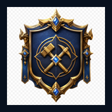

Você está offline
O jogo não conseguiu acessar a rede. Abra novamente quando houver conexão ou use a versão já instalada em cache.

O jogo não conseguiu acessar a rede. Abra novamente quando houver conexão ou use a versão já instalada em cache.